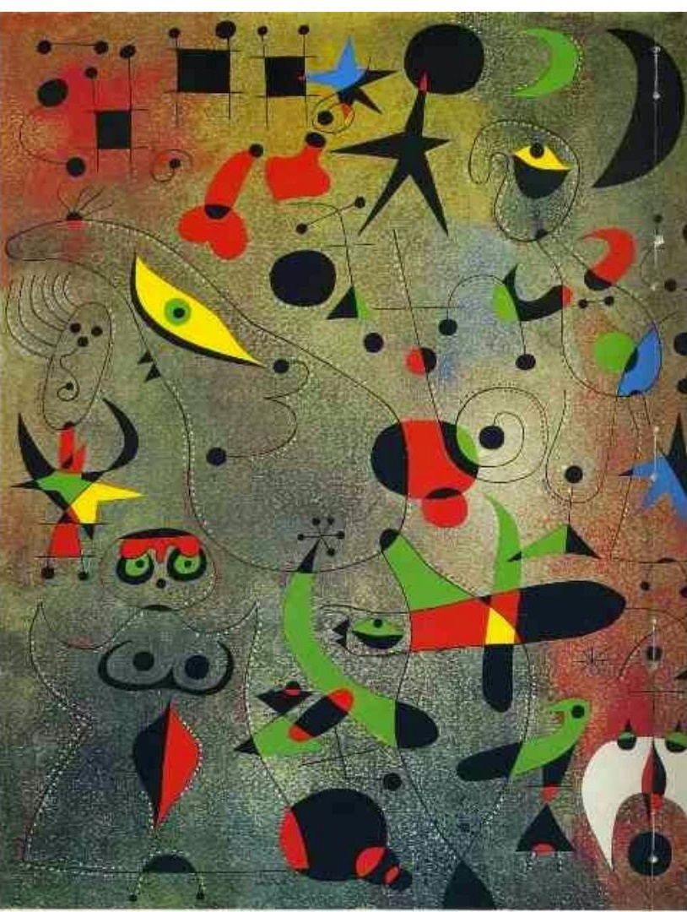
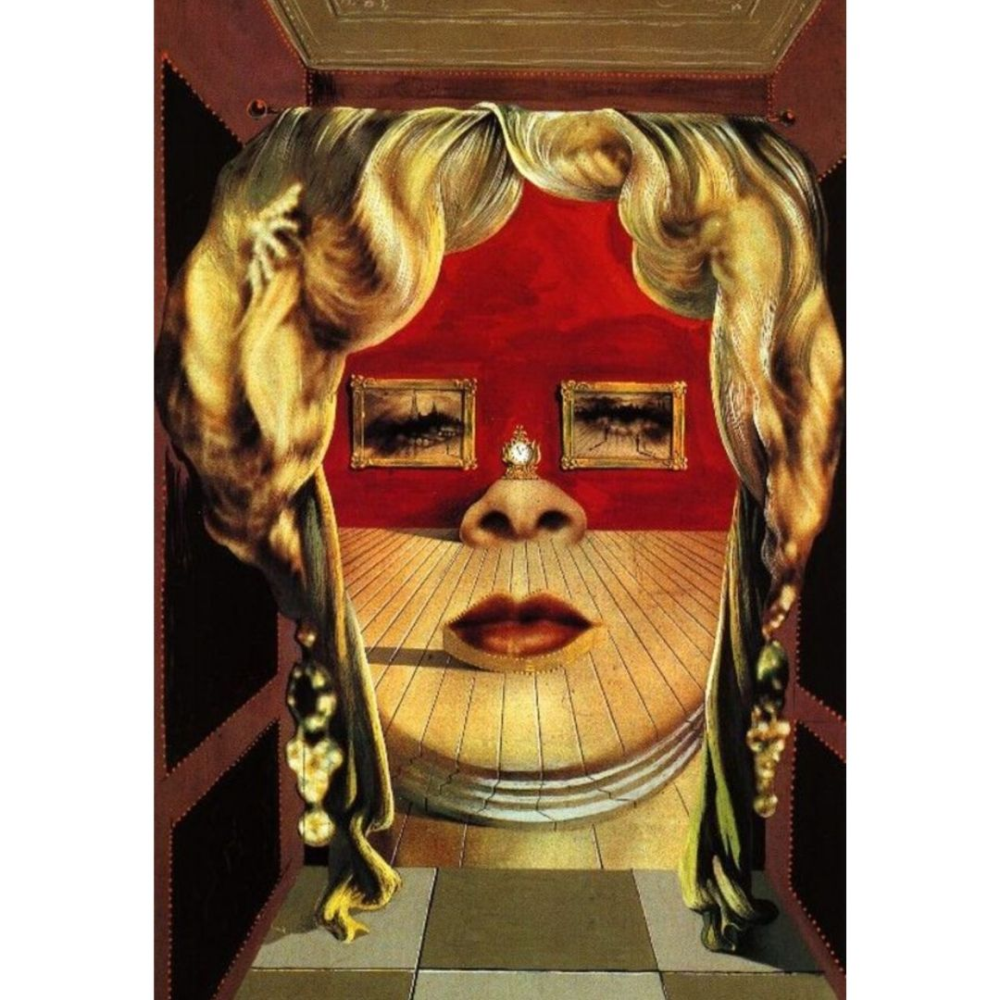
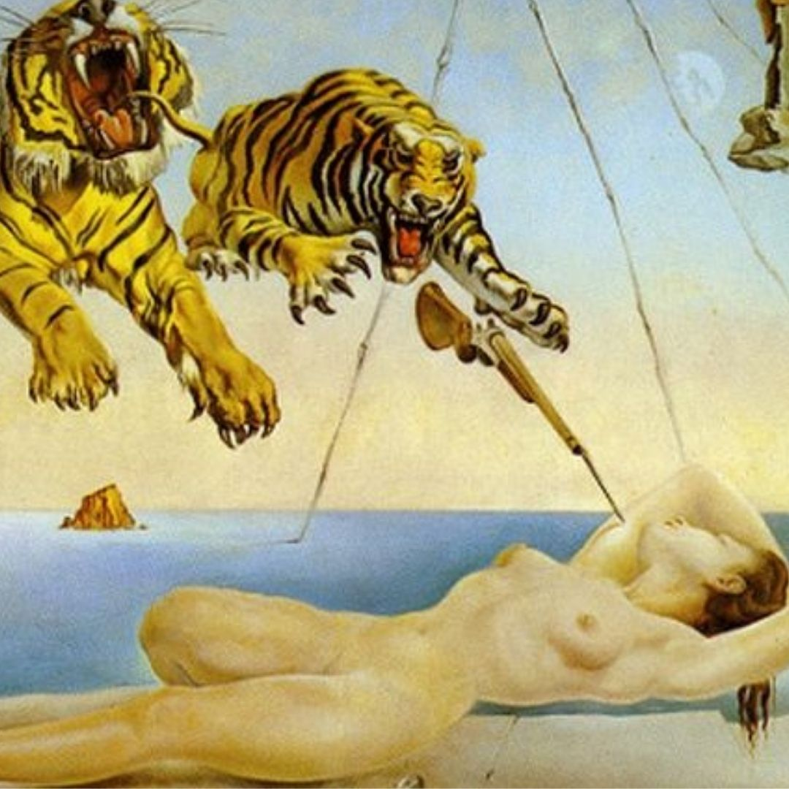

Max Ernst (Brühl, 2 de abril de 1891 — Paris, 1 de abril de 1976)


Max Ernst foi um pintor alemão, naturalizado norte-americano e depois francês. Também praticou a poesia entre os surrealistas, movimento do qual fez parte. Seu filho foi Jimmy Ernst.Filho de Philipp Ernst, professor de artes e de Luise Kopp. Ernst aprendeu a pintar sozinho enquanto estudava Filosofia e Psiquiatria na Universidade de Bonn entre 1909 a 1914, chegando a exibir uma de suas pinturas em 1913. Em 1914 Ernst veio a conhecer o surrealismo através de um grande pintor surrealista, Jean Arp, pelo qual manteve a amizade pela vida inteira. Em 1916 Ernst foi convocado pelo serviço militar alemão para lutar na Primeira Guerra Mundial. O conflito armado teve forte influência na formação de Ernst como artista. Em sua autobiografia, ele anotou algumas das impressões que teve do evento bélico:
“Max Ernst morreu em 1º de agosto de 1914. Ressuscitou em 11 de novembro de 1918, na forma de um rapaz que queria ser mágico e pretendia descobrir os mitos de seu tempo”.
Ernst utiliza a terceira pessoa para se referir a si mesmo como recurso estilístico e estético. Dessa forma, ao se descrever como se fosse outro, o autor faz uma crítica à guerra, evento que despersonaliza os indivíduos, levando-os a uma “morte” temporária. Em outro texto, intitulado O Espelho Sem Aço, Ernst utiliza a guerra como matéria poética: “Prisioneiros de gotas d’água, não passamos de animais perpétuos. Já não sabemos de nada além dos astros mortos; olhamos os semblantes e suspiramos de prazer. Nossa boca está mais seca do que as praias perdidas; nossos olhos sevoltam para um lugar qualquer, sem esperança”.Após a guerra Ernst foi morar em Colônia com Jean Arp e Johannes Baargeld, vindo a fundar o Grupo Dada de Colônia.Este grupo artístico estava interessado no estranhamento da experiência perceptiva. Entre as obras produzidas à época por Ernst e Hans Arp está Figura Diluviana Fisiomitológica. Elaborada, em 1920, a partir da colagem de fragmentos de fotografia, guache, lápis, caneta e nanquim sobre papel sobre cartão, a obra encontra-se atualmente no Sprengel Museum, em Hanôver, na Alemanha O deslocamento das imagens nesta produção gráfica antecipou a característica estética que marcaria o trabalho posterior de Ernst, em sua fase surrealista.Na colagem, nos deparamos com duas figuras humanas: uma delas, parece estar em estado semelhante ao do sono, enquanto a outra sofre uma metamorfose, transformando-se em metade humano, metade pássaro.
Ernst Fez uma exibição em 1920 em Colonia, mas foi fechada pela polícia, alegando que a exposição era obscena demais. Ernst acabou se mudando para Paris em 1922, onde veio a se juntar com o grupo surrealista. Era amigo de Gala e Paul Éluard, André Breton e Tristan Tzara. Ernst viveu em Nova York entre 1941 a 1945, em 1942 conheceu a pintora surrealista Dorothea Tanning. Em 1946 se casou com ela no Arizona. Em 1958 voltou a morar em França até sua morte.

Joan Miró i Ferrà (Barcelona, 20 de abril de 1893 — Palma de Maiorca, 25 de dezembro de 1983)
- 
-

-

Joan Miró foi um escultor, pintor, gravurista e ceramista surrealista espanhol.Quando jovem frequentou a Reial Academia Catalana de Belles Arts de Sant Jordi da Barcelona e a Academia de Gali. Em 1919, depois de completar os seus estudos, esteve em Paris, onde conheceu Pablo Picasso e entrou em contato com as tendências modernistas como o fauvismo e o dadaísmo.No início da década de 1920, conheceuo fundador do movimento surrealista André Breton entre outros artistas. A pintura O Carnaval de Arlequim, 1924-25, e Maternidade, 1924, inauguraram uma linguagem cujos símbolos remetem a uma fantasia, sem as profundezas das questões psicanalistas surrealistas. Participou na primeira exposição surrealista em 1925.
Em 1928, viajou para Holanda, tendo pintado as duas obras Interiores holandeses I e Interiores holandeses II. Em 1937, trabalhou em pinturas-mural e, anos depois,em 1941, concebeu a sua mais conhecida e radiante obra: Números e constelações em amor com uma mulher. Mais tarde, em 1944, iniciou-se em cerâmica e escultura.Em suas obras, principalmente nas esculturas, utiliza materiais surpreendentes, como a sucata.Vários anos depois, rumou pela primeira vez aos Estados Unidos e nos anos seguintes; durante um período muito produtivo, trabalhou entre Paris e Barcelona.
No fim da sua vida reduziu os elementos de sua linguagem artística a pontos, linhas, alguns símbolos e reduziu a cor, passando a usar basicamente o branco e o preto. Algumas obras revelam grande espontaneidade, enquanto em outras se percebe a técnica feita com muito cuidado, e esse contraste também aparece em suas esculturas. Miró tornou-se mundialmente famoso e expôs seus trabalhos, inclusive ilustrações feitas para livros, em vários países.
Ainda que alguns leigos do mundo da arte rechacem o nível da técnica das pinturas de Miró, os grandes conhecedores da obra do artista reconhecem que "se há uma sensação de cliché no efeito de recepção da obra de Miró, isso resulta de quem vê — o artista não tem culpa". Miró atribuía, para cada elemento da realidade um símbolo, uma “tradução poética”, um signo que se repete em cada um de seus quadros. O signo é muito mais metáfora do que imagem. Esses signos eram inseridos dentro de um vazio, e essa combinação entre vazio e signos é o que define esteticamente a obra de Joan Miró.
Em 1954, ganhou o prêmio de gravura da Bienal de Veneza e, quatro anos mais tarde, o mural que realizou para o edifício da UNESCO em Paris ganhou o Prêmio Internacional da Fundação Guggenheim. Em 1963, o Museu Nacional de Arte Moderna de Paris realizou uma exposição de toda a sua obra. Em 1978 recebeu a Medalha de Ouro da Generalidade da Catalunha e o Prêmio Antonio Feltrinelli.

Salvador Dalí i Domènech, 1º Marquês de Dalí de Púbol (Figueres, 11 de maio de 1904 – Figueres, 23 de janeiro de 1989)
- 
- 
-

Salvador Dalí foi um importante pintor espanhol, conhecido pelo seu trabalho surrealista. O trabalho de Dalí chama a atenção pela incrível combinação de imagens bizarras, oníricas,com excelente qualidade plástica. Dalí foi influenciado pelos mestres do classicismo.[1][2] O seu trabalho mais conhecido, A Persistência da Memória, foi concluído em 1931. Salvador Dalí teve também trabalhos artísticos no cinema, escultura, e fotografia. Colaborou com a Walt Disney no curta de animação Destino, que foi Lançado postumamente em 2003 e, ao lado de Alfred Hitchcock, no filme Spellbound.[3] Também foi autor de poemas dentro da mesma linha surrealista.
Dalí insistiu em sua "linhagem árabe", alegando que os seus antepassados eram descendentes de mouros que ocuparam o sul da Espanha por quase 800 anos (711 a 1492), e atribui a isso o seu amor de tudo o que é excessivo e dourado, sua paixão pelo luxo e seu amor oriental por roupas.Tinha uma reconhecida tendência a atitudes e realizações extravagantes destinadas a chamar a atenção, o que por vezes aborrecia aqueles que apreciavam a sua arte, ao mesmo tempo que incomodava os seus críticos, já que sua forma de estar teatral e excêntrica tendia a eclipsar o seu trabalho artístico.